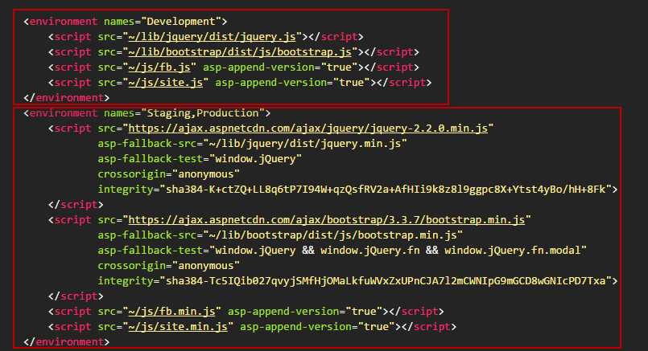
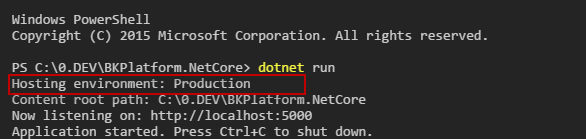
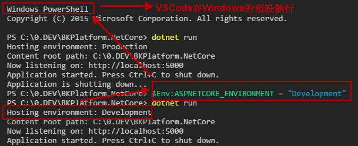
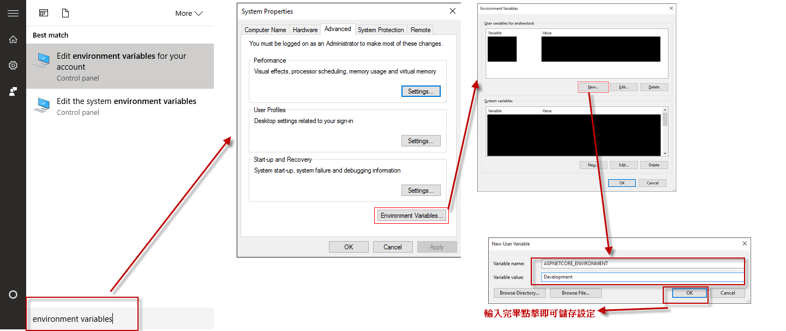

說明一下ASP.NET Core的Hosting environment如何做改變。
一般在應用程式在開發與發佈上常常會愈到參數不同或是設定不同的情形，這在網頁應用程式上更常遇到:如開發使用JS原始碼，但發佈時必須將JS檔案bundle並minify至一個js檔案中。
今天介紹一下ASP.NET Core的Hosting environment來幫我們達到這樣設定。
Hosting environment Introduction
ASP.NET Core提供了一個預設的環境參數設定的方法，可讓我們用WebHostBuilder自動的載入我們目前當下設定好的參數設定，而預設他提供我們 Development, Staging or Production這三種，而我們可以把參數與設定依據不同環境的需求作修改，方便我們開發與發佈的使用切換。
而Hosting environment其實也不僅限於上面這三組設定或是你也可以把設定換名稱，你可以任意建立新的設定(自己新增自訂名稱即可)。
這邊稍微注意一下Windows與MacOS都不區分大小寫(Case insensitive)，Linux的預設則是會區分大小寫(Case Sensitive)
下面即是ASP.NET Core MVC的_Layout.cshtml的預設:

而ASP.NET Core 使用 ASPNETCORE_ENVIRONMENT這個環境變數來決定當前要使用的環境參數組的名稱。預設我們會使用Production這組環境組。如下預設不做修改執起啟動dotnet core 應用程式即可看到我們使用Production這個環境組的設定。

Change Hosting environment
這邊示範在各環境，如何將目前運行的Production改為Development
Windows
Command Line
在cmd上面輸入這個指令就會看到SUCCESS: Specified value was saved.
setx ASPNETCORE_ENVIRONMENT "Development"
而cmd輸入的使用者環境變數不會在目前作用的視窗生效，所以必須重開cmd才能讓dotnet cli讀取到當前新增的使用者環境變數。如果還是不行的話可以嘗試重開機。
而我們也可以將此變數改為新增至系統環境變數，這樣多個使用者都可以適用這個參數
setx ASPNETCORE_ENVIRONMENT "Development" /M
PowerShell
$Env:ASPNETCORE_ENVIRONMENT = "Development"
這邊稍微注意一下，如果你是用VSCode做開發的朋友，VSCode預設的Terminal是用PowerShell，所以千萬不要打cmd指令…(一定不會生效的..)

Windows Control Panel
而我們也可以手動透過控制台的GUI介面加入該參數。
在Windows視窗查詢environment variables>選擇System Properties>點擊Environment Variables>將ASPNETCORE_ENVIRONMENT變數與值，新增至user variables或是新增至system variables。

macOS
用任何一個編輯器打開.bash_profile(這邊我用VSCode)
code ~/.bash_profile
新增ASPNETCORE_ENVIRONMENT=Development
Linux
Linux可以使用export這個指令，而這指令也可以用在macOS上
export ASPNETCORE_ENVIRONMENT=Development